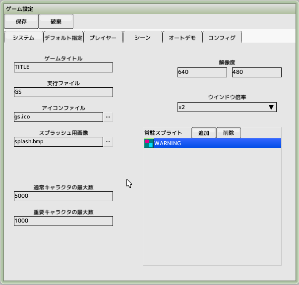
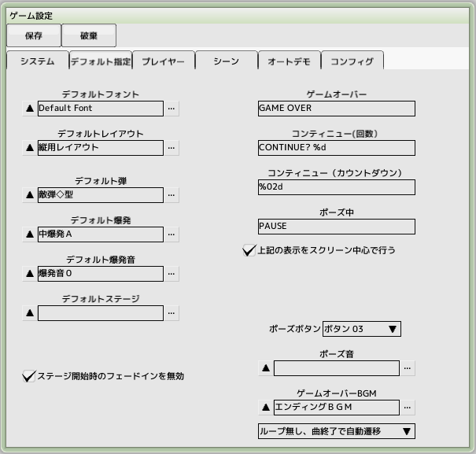
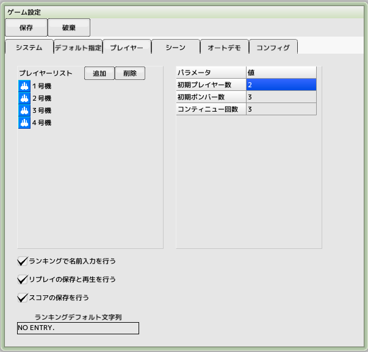
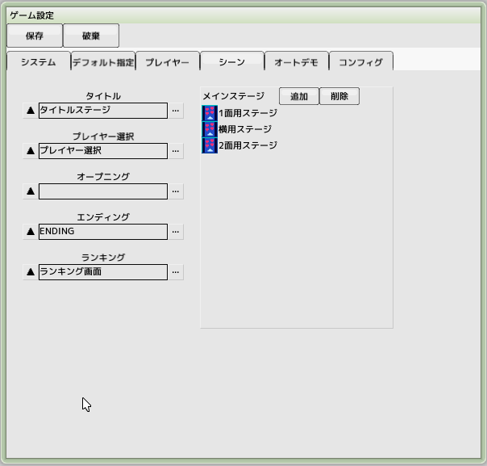
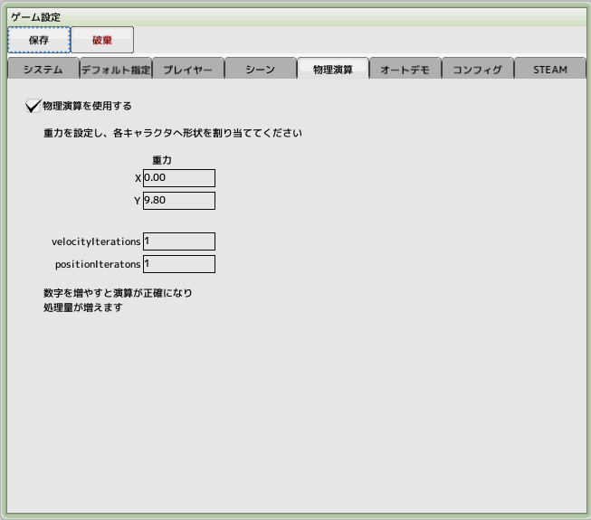
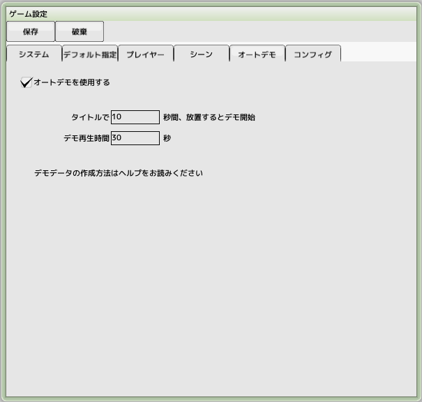
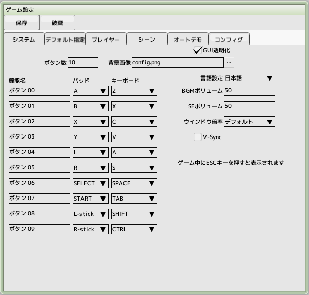
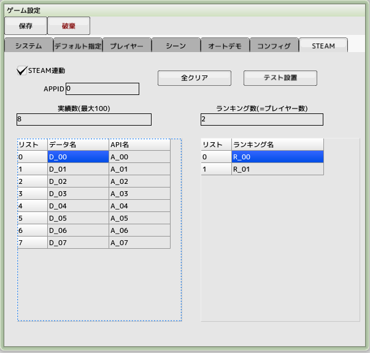

■元のページへ戻る
■元のページへ戻る
システムタブ

- ゲームタイトル
タイトルを変更するとscore.binがリセットされます
- 実行ファイル名
ビルドの際の実行ファイル名を.exeを除いて設定します
- 実行ファイルのアイコン
実行ファイルのアイコンを変更したい場合は設定してください。指定できるファイル形式は .ico のみです。拡張子が .ico
でも中身がビットマップファイルの場合があります（使用できません）
- スプラッシュ用画像
ゲーム起動時のローディング中に表示されます
用意しない場合は、デフォルトのSBロゴが表示されます
- 通常（重要）キャラクタの最大数
画面に出現可能な最大数、キャラクタ編集での重要キャラクタのチェックの有無が影響します
ゲーム中にこの数を超えることはできません
- セーブフォルダ名
スコア、リプレイを保存するフォルダ名
- 解像度
ゲームの基準となる画面解像度
- ウインドウ倍率
ウインドウのサイズに影響
- FPS
ゲームを進行するフレームレートを設定します。数値を大きくした場合、十分なCPUパワーが必要になります
- 常駐スプライト
ゲーム開始前に読み込むスプライトを全て指定します。常駐しない場合はステージ開始時に読み込まれます
デフォルト指定タブ

- デフォルトフォント
ゲームオーバー、ポーズ表示文字列のフォント
- デフォルトレイアウト
ステージ編集でレイアウト設定がなされていない場合のレイアウト
- デフォルト弾
弾幕テスト実行するときに使用されます
- デフォルト爆発
デフォルトスクリプトで使用する爆発
- デフォルト爆発音
デフォルトスクリプトで使用する爆発音
- デフォルトステージ
単体テスト実行で使用するステージ
- ステージ開始時のフェードインを無効
自前でフェード等をする場合はチェックしてください
- コンティニュー時、BGM一時停止
BGMを停止させる場合はチェック
- ゲームオーバー
ゲームオーバー時に表示する文字列
- コンティニュー（回数）
残りコンティニュー回数を表示する文字列
- コンティニュー（カウントダウン）
コンティニュー待ちの文字列
- ポーズ中
ポーズ中に表示する文字列
- 上記の表示をスクリーン中央で行う
スクリーン中央か、メイン画面中央の選択
- ボタン
- 決定
次へ進むためのボタン
- キャンセル
前へ戻るためのボタン
- コンフィグ
コンフィグ画面を出すボタン
- ランキング
タイトル画面からランキング画面へ遷移するボタン
- ポーズ
ゲーム中ポーズするためのボタン
- ポーズ音
ポーズ時に再生する効果音
- ゲームオーバーBGM
ゲームオーバー時に再生するBGM
ループの有り無し、またBGM終了時にシーンを遷移させるか選択
プレイヤータブ

- プレイヤーリスト
使用するプレイヤーを登録します。複数登録し、ゲーム中に選択させることも可能です
- 初期プレイヤー数
ゲーム開始時の残りプレイヤー数です
- 初期ボンバー数
ゲーム開始時の残りボンバー数です
- コンティニュー回数
コンティニューできる回数です
- 最大スコア
ゲーム中のスコアの最大値
- ランキングで名前入力を行う
ゲーム終了時にランキング画面へ遷移し名前入力を行います
- リプレイの保存と再生を行う
ランキング登録時にリプレイをディスクに保存します
- ランキングデフォルト文字列
ランキング内の未入力の名前
- ランキング集計方式
- プレイヤー毎に集計(最大10)
プレイヤータイプごとに集計します。プレイヤータイプ数は最大10に制限されます
- 全プレイヤー纏めて集計
全てのプレイヤーが一つのランキングへ集計されます。プレイヤータイプ数に制限はありません
シーンタブ

- タイトル
タイトル画面に使用するステージを登録します
- プレイヤー選択
プレイヤー選択画面で使用するステージを登録します
- ランキング
ランキング表示で使用するステージを登録します
タイトル画面からボタンで遷移してきます
- オープニング
プレイヤー選択後、自動で遷移します
- エンディング
メインステージの一番下をクリア後、自動で遷移します
- メインステージ
メインステージを１面から順番に登録します、クリアすると次の面へ自動で遷移します
物理演算タブ

- 物理演算を使用する
物理演算を利用しキャラクタを制御します
- 重力
全体にかかる重力です。物理演算が有効なキャラクタのみ影響を受けます（単位は pixel/s^2）
- velocityIteration
数値を増やすと演算が正確になりますが重くなります
- positionIteration
数値を増やすと演算が正確になりますが重くなります
- 長さの単位
画面上の32ピクセルが物理演算単位の1m(メートル)になります
詳しくはこちら
オートデモタブ

- オートデモを使用する
タイトルで一定時間放置時にオートデモ再生を行います
- 放置時間
タイトルで指定秒数放置するとオートデモを再生開始します
- 再生時間
オートデモを再生する秒数。指定秒数経過後、タイトルへ自動遷移します
- オートデモ作成方法
- 普通にプレイしてリプレイデータを作成します
ファイル名は「replayZZXX.bin」になります。(XXは00～99,ZZは00～09)
- リプレイファイルをリネームします
「replayZZXX.bin」->「demoXX.bin」
- ゲーム設定でオートデモを有効にする
- SBDファイルと同じフォルダにdemoXX.binを置きます
- ビルドするとDATファイル内に取り込まれるので配布には不要です
コンフィグタブ

機能名とパッド、キーボードとの関連付けを行います
ビルドしたゲームを実行中もESCキーでこの画面を呼び出せます
日本語と英語用の機能名を入力できます。言語設定を切り替えてください
- ボタン数
表示するボタン数
- 背景画像
ウインドウ内の背景画像を指定します
- GUI透明化
GUIが透けるようになります
- 言語設定
表示用の言語を選択します
- BGMボリューム
BGMの音量
- SEボリューム
効果音の音量
- ウインドウ倍率
ウインドウサイズ
- V-Sync
遅延に影響します
- フルスクリーン
全画面で実行します
- 振動
コントローラーの振動を有効にします
- Version
ゲームのバージョン番号
- プレビュー
ゲーム設定を保存後、コンフィグ画面を表示します
STEAMタブ

- STEAM連動
STEAMの実績とランキングと連動する場合にチェックします
- APPID
STEAMで設定したAPPIDを入力してください
- ランキングの自動更新停止
スクリプトのみでの更新になります
- 実績数
STEAMで設定した実績数を入力してください
- ランキング数
プレイヤータブで登録した自機数と同じになります
- データ名
STEAMのデータページのAPI名を設定します
- API名
STEAMの実績ページのAPI名を設定します
- ランキング名
STEAMのランキングページの名前を設定します
- 全クリア
内容をクリアします
- テスト設置
ツール上でデバッグするためにダミーを設置します
Note:
ツール上でのデバッグ実行中は、本来作成しているゲームの実績とランキングへのアクセスはできません
その肩代わり用の実績とランキングを用意しています
テスト設置ボタンをおすとそれらの設定へ置き換わります
対応しているSteam機能
- Steam実績
ストア側の設定が必須になります。途中経過にも対応しています
- Steamランキング
ストア側の設定が必須になります。自機タイプ別、全て混合が選択できます
- Steamクラウド
ストア側の設定が必須になります。設定、ランキング、リプレイが保存されます。アプリ側の設定は必要ありません
- Steamタイムライン
Steamのゲームレコーディングに自動でチャプターを挿入します。STEAM連動がONで自動的に有効になります。
■ページ上部へ戻る